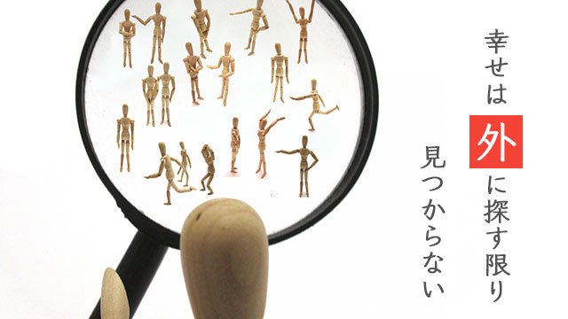

私たちは何にでも理由や意味を求めたがる。
たとえば嬉しそうにニコニコしている人がいたら「何かいいことあったの？」と聞くだろう。
○○なのはきっと△△だからだという理由や根拠を当てはめることでその人の行動（結果）を納得するわけだ。
何にでも理由や原因があるなら、将来欲しい結果があるときあらかじめそうなるよう「理由（原因）」をつくり出せばよいと考えるのは当然だ。
原因と結果の法則。
良い結果には良い原因が、悪い結果には悪い原因がある。この直線的思考が私たちの行動原理の主な要素となっている。
こうして先に原因をつくるという考えは、将来の良い結果に備えて計画を立てたり策定するという発想を生み出す。
たとえば
一生懸命努力する（原因・理由）→成功する（結果）
事業や商売で成功する（原因・理由）→金持ちになる（結果）
という因果的発想。
つまり成功したい（目標）のなら、いまのうちに「努力する」という理由を先につくり出せばいいという発想。「金持ち」になりたいなら事業や商売で成功しなければならないと考えること。
将来の安定を手に入れたいなら良い学校、良い会社へ。企業が売れる新製品を出したいなら、市場調査をして人々のニーズを探ることなどどれも同じ発想の下に行われる。
しかしこのやり方はうまく行かない。
努力と成功は必ずしも一致しないし、事業で財を成す場合もあれば他の方法で富を築くこともある。良い学校とか良い会社もそう。（そもそも良い学校良い会社の定義自体あいまいだが、恐らく多くの人は偏差値が高いとか大企業とかを指しているのだろう）。
いずれにしても有名校や大企業と「人生の幸福」や安定とは何も関係していない。
これらは「最新流行のファッションを身につければ異性にモテる」というのと同じくらい浅薄な発想でしかない。
一つの「結果」には無数の因子が絡み合っている。それぞれが網目のような紋様を形成し互いが複雑に影響しあう、その果てに生まれるのが成果であり結果だからだ。
つまりそれは「縁」というのに近い。
「ああすればこうなる」「○○するには××が必要」という単純な直線思考は、私たちを条件づけという狭いオリの中に閉じ込めてしまう。
外側の条件を満たしても幸せにならない
○○するには××が必要という条件づけは決して人生を好転させない。なぜなら条件はいくらでも増え続けるからだ。
たとえば多くの親は子どもに「勉強してもらいたい」と思っている。しかしそれはなぜだろう。
勉強しなければ成績は上がらない。成績が上がらなければ良い学校へ行けない。良い学校へ行かなければ良い就職口が見つからない。良い就職口が見つからなければ、不利な条件で働かなければならない。良い縁談も来ないかも知れない…等々。
このように「良い条件探し」が頭にあるに違いない。こうして「条件」ばかりが増えていく。条件とはゴールに達するためには「この道を行け」あるいは「この道しか通ってはいけない」という制限を意味する。
たとえば山頂へ登るルートは複数あるのに一つに絞るようなものだ。あるルート（道）は険しいかも知れない。あるルートは美しい草花に囲まれて楽しい道行きかも知れない。またヘリコプターでいきなり山頂に舞い降りるという超迅速な方法もあるかも知れない。人によって様々な道というものがある。自分に合ったルートを辿ればよい。
いずれにしても山頂に達すればそこは絶景だろうから。それを一つの道しか通るなというのは彩りある人生の可能性を閉ざすことに他ならない。
もう一度「親はなぜ子どもに勉強させたいか」「なぜ良い学校へ」と考えるのか。究極的には我が子に幸せな人生、充実した人生を送って欲しいからと答えるだろう。
なら幸せになるための条件ばかり追い求めることは幸せ（ゴール）をかえって遠くに追いやっていることに気づいて欲しい。
そしてこれは親と子の話だけではない。私たちは誰もが幸福や人生の充実を望んでいるはずだ。
「金持ちになれば幸せになれる」「見映えの良いあの人と結婚すれば幸せになれる」
このように外側に条件を設定する限り幸福を取り逃がし続ける。
たとえ金持ちになったとしても、失うことを恐れさらにもっと金持ちの人と比較することで「不幸」を感じざるを得ないからだ。
外側の条件を満たそうとしても常にそれは相対的優位でしかない。
絶対的幸せは外から来るものではなく内側からあふれ出るものだからだ。
今この瞬間幸せであること
では、内側からあふれ出る幸福とはどうやって得られるのだろう。
それは端的に言えば冒頭で述べた一文にある。私たちは「何にでも理由や意味を求めている」と言った。逆に言えば理由や意味、根拠のないものは信じられないというのが現代に生きる我々の思考のクセだ。それが幸せを感じにくくしている。
だから特に意味や理由のない幸福感を感じる習慣をつくれば良いということになる。
そのためには、これまでの物の見方を転換するだけで良い。毎日の見慣れた景色―朝夕の通勤の途中で見る街路樹の緑や濡れて光るアスファルト、合間に入った喫茶店のコーヒーの香り、窓辺に映る夕陽の赤―の中にふとした神秘や美しさを感じる瞬間がある。
日頃忙しさにかまけて見落としているありふれた光景の中に、五感をとぎ澄ましてみれば幸福の源泉がある。
よく周囲を見渡せば美しいものがあふれていること、それらに包まれていることに気づく。
私たちはふだん「やらなければならないこと」「解決しなければならないこと」で頭をいっぱいにし、それらの問題事に振り回されて生きている。周囲の何気ない自然の美しさや他人の優しさに気づく余裕を失っている。
それらに意識的に気づこうとする意思をもつことで気づきはさらに深まり幸福感も増す。
その上で目の前にある、自分にできることを後先を考えず誠実にやりとげる。
これらは要するに常に「今この瞬間」に意識を置いて生きることに他ならない。
これが今幸せを感じる秘訣だ。
私たちが日頃あまり幸福を感じないのは、過去と未来に囚われて生きているからだ。
「今のうちにこうしておかないときっと大変なことになる」「あのときもっとこうしておけば良かったのに」
このように過去を悔やみ未来を心配し続ける。
こうして現在の幸せと充実を取り逃してしまう。
未来に幸せを追う者は決して幸せにならない。未来がやって来るとき、私たちはそれを「現在」としてしか経験できないからだ。
従って現在の中に幸せを見い出せない者は、これから先の現在（未来）にも幸せを見ることはないということになる。
幸せとは決して「やったぁ」などと派手に喜ぶことではない。ハイテンションに舞い上がることでもない。
不幸が消えたときそこに残る静かなもの、そこはかとなく内奥からあふれ出るもののことだ。
歯痛（問題ごと）があるとき私たちは「何でこんな目に…」と悩むが、痛みが消えると幸福になる。だがふだんはその幸せ（痛みのないありがた味）を感じることはない。
あまりに地味なため気づかないのだ。しかし「今この瞬間に居る」ことで理由も意味もない幸せを感じることができる。そしてその「今の幸せ」が次の幸せへと連鎖して行く。
しかしそれは、理由や意味づけをもたないからこそ外側の条件に左右されることもなく絶対的な至福となり得るのだ。
幸せは外に求めるのではなく内側からわき起こるのだ。そのあふれ出る至福の思いが世界を幸せに染めていく。
決して逆ではない。外に探す限り真の幸せは見つけられないだろう。